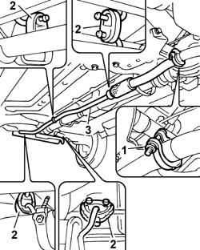

1076B11 FULL EXHAUST PIPING - R.R. FOR FOUR-WHEEL DRIVE MODELS
- Path
- Procedures > 10 ENGINE UNIT > 1076 EXHAUST PIPES AND SILENCERS > 1076B EXHAUST PIPES AND SILENCERS > 1076B11 FULL EXHAUST PIPING - R.R. FOR FOUR-WHEEL DRIVE MODELS
- Kind
- repair procedure (removal / refitting; the operation number is the code)
- Applies to
- engines: 1.2 8v, 1.3 JTD 16v; all production periods; only with equipment: SUV
- Interactive page
- https://sloeber94.github.io/elrnDB-fPnd/en/#/169001478
Applies to: engines: 1.2 8v, 1.3 JTD 16v; all production periods; only with equipment: SUV
 Removing
Removing
 Refitting
RefittingPosition the vehicle on a lift.
Raise the vehicle.
1. Unscrew the nut securing the exhaust pipe metal sealing collar.
2. Release the exhaust pipe rubber mounts.
3. Remove the exhaust pipe assembly.

Applies to: engines: 1.2 8v, 1.3 JTD 16v; all production periods; only with equipment: SUV
Refitting
RemovingPosition the exhaust pipe assembly in its seat.
Secure the rubber mounts to the seats on the vehicle underbody.
Tighten the nut securing the metal collar to the fitting to torque.
Value daNm | Fastening | Component | Ø | |
|---|---|---|---|---|
- | 4 | Nut | - | M10 X 1.25 |
Lower the vehicle.
Remove the vehicle from the lift.
Topics that link to this page (5)
- 1004B11 POWER UNIT WITH MECHANIC TRANSMISSION - R.R. FOR FOUR-WHEEL DRIVE MODELS
- 1004B13 POWER UNIT WITH MECHANIC TRANSMISSION - R.R. FOR MODELS WITH AIR-CONDITIONER AND FOUR-WHEEL DRIVE
- 2720C10 DIFFERENCIAL UNIT - R.R.
- 4420D10 REAR SUSPENSION AXLE - R+R INCLUDES BLEEDING
- 4420D42 REAR SUSPENSION BEAM - R R